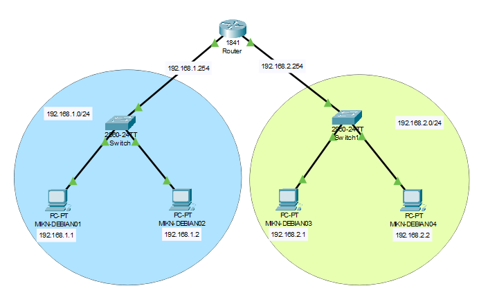
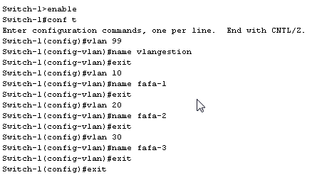
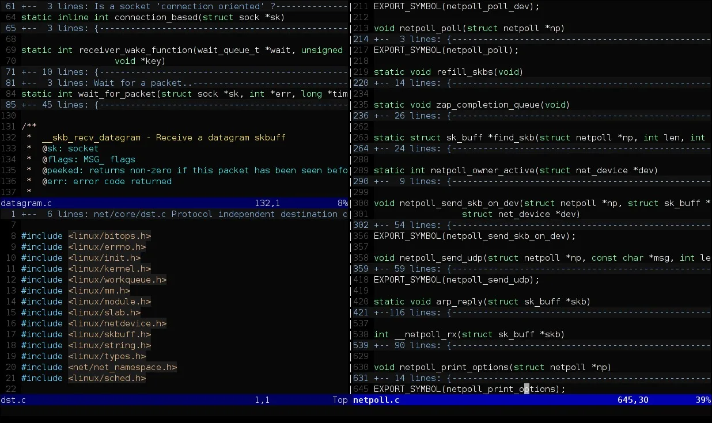
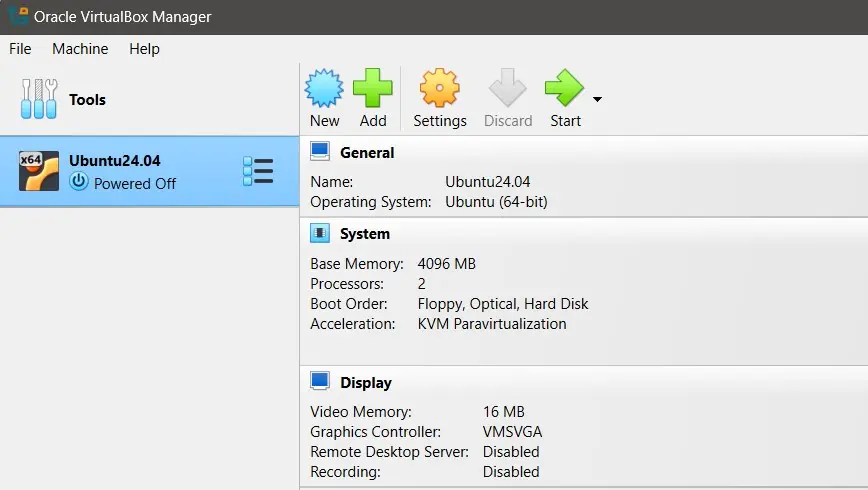
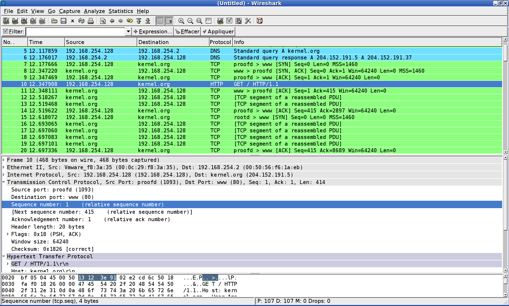
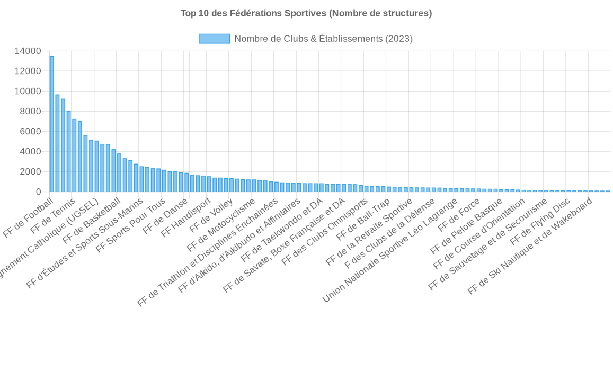
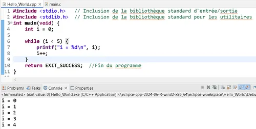
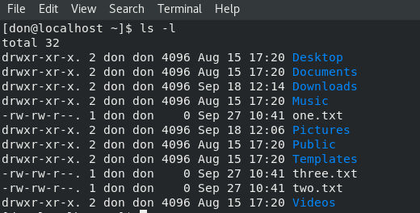
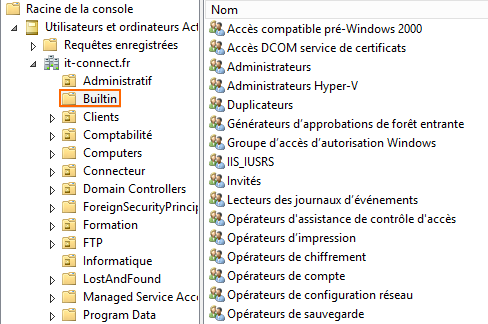
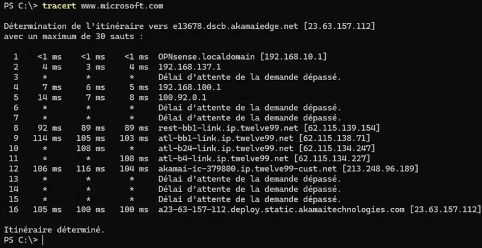

Démarche Réflexive & Compétences
Suivi et analyse de ma progression par Apprentissage Critique (AC) selon le niveau attendu au fil des années.
Compétence : Administrer les réseaux et l'Internet — Niveau 2
Déploiement d'une topologie multi-commutateurs avec routage dynamique OSPF multi-aires et redondance de passerelle par défaut via le protocole HSRP/VRRP.
Le routage statique du BUT1 montrait ses limites face à la panne d'un lien physique. OSPF permet une convergence automatique en cas de rupture de boucle sans intervention humaine.
Une mauvaise configuration de l'aire de transit (Area 0 manquante sur un routeur périphérique) a empêché la propagation des LSA. Diagnostiqué via show ip ospf neighbor.
Compréhension de la métrique OSPF basée sur le coût (bande passante) plutôt que le nombre de sauts. Importance d'un plan d'adressage IP hiérarchisé pour faciliter la récapitulation de routes.
Ce qui a fonctionné : Bascule HSRP validée en moins de 3 secondes lors d'une coupure simulée sur le lien actif.
Ce qui sera amélioré : Mettre en œuvre l'authentification MD5/SHA sur les paquets OSPF pour contrer l'injection de fausses routes dans le domaine.
Traces ciblées :
Topologie OSPF multi-aires sous Packet Tracer / GNS3

Table de routage et adjacence des voisins CLI Cisco

Déploiement de microservices conteneurisés via Docker & Docker Compose (reverse proxy Nginx, PostgreSQL, Portainer) et gestion de machines virtuelles sous VMware ESXi.
La conteneurisation isole les dépendances applicatives sans consommer les ressources lourdes d'un hyperviseur complet, garantissant une reproductibilité parfaite des environnements.
Problème de persistance des données sur un conteneur PostgreSQL lors d'un docker compose down : absence de volume nommé. Corrigé par la déclaration explicite d'un volume managé.
Maîtrise des réseaux internes Docker (bridge, host, overlay) et de la gestion fine des secrets et variables d'environnement (fichiers .env hors Git).
Transposition pro : Les principes de conteneurisation appris sur mon serveur personnel me permettent d'automatiser le déploiement d'infrastructures selon les pratiques DevOps.
Traces ciblées :
Fichier docker-compose.yml multi-services

Tableau de bord Portainer & conteneurs actifs

Compétence : Connecter les entreprises et les usagers — Niveau 2
Configuration de tunnels chiffrés VPN IPsec site-à-site (Phase 1 IKEv2, Phase 2 Transform-set ESP-AES-256) entre deux agences d'entreprise distantes.
Garantir l'intégrité, la confidentialité et l'authentification des flux sensibles transitant sur le réseau public Internet sans louer de liaisons spécialisées coûteuses.
Échec d'établissement de la Phase 1 causé par un désaccord sur la clé prépartagée (PSK) et le temps de vie (Lifetime). Débogué via debug crypto isakmp en CLI.
Compréhension de l'impact de l'encapsulation IPsec sur le MTU (fragmentation de paquets) et nécessité d'ajuster le ip tcp adjust-mss sur les interfaces de tunnel.
Traces ciblées :
Configuration Crypto Map & IPsec Cisco
Capture Wireshark validant le chiffrement ESP (paquets illisibles)

Compétence : Créer des outils et applications informatiques — Niveau 2
Développement de scripts d'automatisation exploitant des API REST, des bases relationnelles PostgreSQL/Supabase et des pipelines événementiels avec n8n.
Remplacer les actions manuelles chronophages par des processus automatisés robustes, réduisant le facteur d'erreur humaine dans l'exploitation courante du SI.
Gestion des quotas d'appels API (rate-limiting) et des exceptions HTTP 429. Mise en place de boucles de réessai avec temporisation exponentielle (exponential backoff) en Python.
L'automatisation exige une gestion irréprochable des logs et de l'idempotence des scripts pour éviter les effets de bord indésirables en production.
Traces ciblées :
Workflow n8n avec parsing JSON et webhooks

Code source Python et interactions Supabase

Compétence : Sécuriser un système d'information — Spécialité BUT2 Cybersécurité
Durcissement d'OS Linux/Windows Server (désactivation des services et protocoles obsolètes SMBv1, Telnet), configuration d'ACLs d'administration et filtrage pare-feu (UFW / iptables).
Appliquer le principe de défense en profondeur et de moindre privilège préconisé par l'ANSSI afin de limiter la surface d'attaque en cas de compromission d'un service.
Blocage involontaire des sessions SSH après une règle iptables DROP par défaut sans avoir autorisé au préalable les connexions déjà établies (--ctstate RELATED,ESTABLISHED).
Nécessité absolue de prévoir une session de secours en console physique ou via un temporisateur de retour automatique avant d'appliquer des règles de pare-feu critiques à distance.
Traces ciblées :
Politique de filtrage iptables / UFW sécurisée

GPO de durcissement Active Directory

Compétence : Surveiller un système d'information — Spécialité BUT2 Cybersécurité
Cartographie active des hôtes et des ports via Nmap, détection d'anomalies de trafic sous Wireshark et centralisation des journaux système avec Syslog.
Un administrateur ne peut protéger que ce qu'il connaît : l'audit continu permet de détecter les services non déclarés (*Shadow IT*) et les tentatives d'intrusion avant qu'elles n'aboutissent.
Génération de faux positifs lors d'un scan SYN agressif (nmap -T5) ayant provoqué le crash temporaire d'un service embarqué fragile. Ajustement vers un profil temporel mesuré (-T3).
L'audit de sécurité doit respecter des règles éthiques et contractuelles strictes. La centralisation des logs est inutile sans règles d'alerte automatiques pertinentes.
Traces ciblées :
Rapport d'audit de ports et versions de services avec Nmap

Analyse d'une tentative de brute-force sous Wireshark
Compétence : Administrer les réseaux et l'Internet — Niveau 1
Montages sur platines d'essais, mesures au multimètre et vérification des lois de Kirchhoff et d'Ohm.
Indispensable pour comprendre la couche physique des réseaux (OSI 1) et le transport du signal (PoE, signaux binaires).
Câblage série/parallèle, générateurs de tension continue et comparaison valeurs théoriques/pratiques.
Différencier le branchement série (ampèremètre) et parallèle (voltmètre) sans provoquer de court-circuit.
Validation concrète de la théorie et compréhension de l'atténuation du signal dans un support physique.
Modéliser systématiquement le circuit sur LTspice avant de passer au câblage réel.
Configuration de commutateurs et routeurs Cisco : VLANs, Trunk 802.1Q, routage inter-VLAN et routes statiques.
Segmenter un réseau d'entreprise, isoler les services (RH, Prod) et sécuriser la communication inter-services.
Simulation Packet Tracer puis mise en œuvre sur baie physique via câble console et CLI Cisco IOS.
Mémoriser la hiérarchie des modes Cisco et diagnostiquer les erreurs de tag VLAN sur les ports Trunk.
Différenciation nette entre trames Ethernet (L2) et paquets IP (L3), et rigueur de la documentation réseau.
Systématiser la sauvegarde copy run start à chaque étape clé pour éviter les pertes de configuration.
Déploiement Windows Server, domaine Active Directory, Unités d'Organisation, partages NTFS et script PowerShell.
Centraliser l'authentification des utilisateurs et automatiser l'octroi des droits selon le moindre privilège.
Console ADUC, GPO, permissions effectives (partage vs NTFS) et cmdlets New-ADUser & icacls.
Assimiler la règle de la permission la plus restrictive entre le partage réseau et le système NTFS.
Prise de conscience de la puissance des scripts d'industrialisation face à la configuration manuelle.
Automatiser l'import massif d'utilisateurs directement depuis des exports CSV des services RH.
Compétence : Connecter les entreprises et les usagers — Niveau 1
Serveur IPBX Asterisk (Linux Alpine), postes Fanvil et téléphones Cisco avec auto-provisioning TFTP.
Assurer la communication voix et l'interopérabilité multi-constructeurs via le protocole SIP.
Édition de pjsip.conf et extensions.conf, service tftpd et profils XML par adresse MAC.
Syntaxe stricte d'Asterisk et gestion rigoureuse des noms de fichiers XML pour le provisionnement.
Fonctionnement du protocole SIP (UDP 5060) et RTP pour les flux voix en temps réel.
Générer dynamiquement les fichiers de provisioning XML via un script Python basé sur un inventaire CSV.
Compétence : Créer des outils et applications informatiques — Niveau 1
Administration Linux en ligne de commande pure : arborescence, droits (chmod/chown), gestion des paquets.
La majorité des équipements réseau et serveurs s'administrent sans interface graphique via le shell SSH.
Sessions SSH PuTTY/Terminal, commandes Bash (grep, awk, tar, nano, vim) et gestionnaire APT.
Retenir les nombreuses options des commandes système et prendre en main l'éditeur Vim.
Rapidité et puissance inégalées du shell, automatisation par redirection de flux et consultation des manpages.
Centraliser un aide-mémoire personnel (cheat sheet Markdown) documentant chaque syntaxe utile.